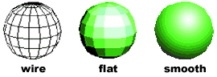

Now, in 3-D!
From 1982 to 1985, Tom Hudson worked as part of the small crew behind ANALOG Computing magazine writing articles, creating type-in games and other programs, and doing whatever else needed to be done. One of his pieces, published in 1984, was a little 3D wireframe renderer called Solid States. Tom explains:
Being a long-time science fiction fan, creating high-tech graphic displays like those in movies and TV shows was something I wanted to do. When Battlestar Galactica came out in 1978, the vector-graphic displays in the “Viper” cockpits were a real inspiration. I bought my first personal computer, a Compucolor II, shortly after Galactica came out. I had visions of creating all sorts of video games with wireframe representations of spacecraft, etc. The reality was somewhat less impressive—the Compucolor could only display 128x128-pixel graphics in eight colors.
I found some 3D graphics BASIC code in one of the old computer magazines that was out then and started playing with it a bit. The matrix math was somewhat beyond my grasp at that point, but I tinkered with it enough to get some crude 3D stuff working on the Compucolor. Since the Compucolor had only an 8080-based processor, running at just over one mHz, with 32K of memory, you can imagine that the results fell far short of my fantasies.
{kind=link}
{kind=link}
Solid States itself came about when I was working for ANALOG Computing. Atari had introduced a nifty little X-Y pen plotter and it was perfect for drawing vector-graphic images like computer-generated wireframes. I grabbed the old Compucolor graphics code and built up a new program for the Atari, and had it output the wireframes to both the screen and the plotter.
I remember talking to ANALOG’s Charles Bachand (he was our resident hardware expert) about working up a special graphics card for the Atari that would output to a much higher resolution, true-color display. That project died a quick death when I did some checking on the cost of a monitor that would display 1280x1024 pixels. At that time they were $3000-5000. Of course, I was totally ignoring the fact that the Atari 800 would slow to worse than a crawl trying to compute the shading for a true-color image of that resolution.
Following his departure from ANALOG magazine in August 1985, Tom produced two successful digital paint programs for the Atari ST: DEGAS and DEGAS Elite, both published by Batteries Included (BI). Tom continues:
{kind=link}
{kind=link}
While writing DEGAS, word got out that I was working on a paint program (then known as HUDraw). Batteries Included jumped at the chance to get some ST software to sell and since they were, in my opinion, the best Atari software company at the time, I decided to market the program through them. I got a phone call from Gary Yost one evening shortly after I made the BI deal. Gary told me he'd like to have Antic Software sell HUDraw. I told him I was going with BI on it, but since I didn't want to put all my eggs in the BI basket, I told him that I’d be willing to have Antic sell my next product, which I figured would be a 3D modeling package. After all, the Atari ST had much better graphics capabilities than the 8-bit [computers], and I still had the dream of doing TV/film-quality computer graphics.
Reviving his interest in 3D graphics, Tom ported his Solid States program to the ST and showed it to Gary Yost at the Fall 1985 COMDEX convention. Tom’s first Antic product, CAD-3D 1.0 soon followed, and Gary quickly lost interest in anything not related to developing graphics software. Tom relates:
As soon as I had finished DEGAS and got it out the door, I brought the Solid States program over from the 8-bit system and started hacking it into a form that would run under the ST’s GEM operating system. I set it up with several windows and a crude number-based interface. The basic version I had did flat shading and you could define face colors.
{kind=link}
Easy3D on the Macintosh
I had just a few days to get the prototype up and running before having to go to a trade show (I’m pretty sure it was COMDEX)—I went out and demo'd DEGAS with BI and met with Gary and showed him the 3D prototype. He and I walked over to the Apple booth to look at the beta of a new Mac program (Easy 3D, from Enabling Technologies) to see how they handled their user interface. [What we saw in Easy 3D inspired] a new direction for Solid States ST, away from the number-based input and toward a graphical/icon interface and more direct object manipulation like most 3D programs have now.
{kind=link}
CAD-3D 2.0 on the Atari ST
Gary remembers it this way:
When Tom showed his prototype of Solid States on the ST to me I could immediately see that there was the potential for a whole new way of making images. I can’t describe the excitement I felt—especially because I’d just come from the Apple booth and saw how they were presenting user-produced Macintosh imagery as a new language for communication. There was no reason why the Atari ST couldn't do exactly the same things, (even better) in color. I was hooked, and immediately started working with Tom to get what would become CAD-3D out the door as soon as possible.
While Tom and Gary were planning CAD-3D, Mark Kimball was working on some very interesting technology that would eventually find its place at Antic. Mark is a programmer and hardware engineer who had been working at Tektronix in Oregon, developing, among other things, applications for liquid crystal shutters. One of these applications was as a light valve for 3D glasses.
Prototype Stereotek 3D Goggles
Mark’s prototype glasses had been first used with a Radio Shack Color Computer, but Mark had since begun experimenting with the Atari ST. Mark explains:
I had been experimenting with a hardware/software combination, which used the Atari ST to display 3D images with welder’s goggles-style glasses using a video camera, a home-built frame grabber, and Tom Hudson’s DEGAS paint program for the ST. I also had written some programs using Forth to draw and display some mathematical objects using the same 3D goggles. I wrote an [Atari ST desk accessory] which would let me page through memory and discover where DEGAS was storing its images. From there, I could activate a page-flipping routine to switch between two different pages in DEGAS. So all I had to do was to import two images into DEGAS and activate the page flipping routine and—voila!—3D images. When Tom’s CAD-3D came out, I immediately bought it and started experimenting with it. The first thing I did was generate some static views, save them as files, and then import them to DEGAS to view with the 3D goggles. Since Tom had written both programs, and we wanted to try to sell 3D glasses to a larger market, it seemed like a good idea to get Tom and Gary involved.
Left- and right-eye images would flicker back and forth in synchronization with the shutters in the glasses (much faster than this simulation)
Tom explains:
These were liquid-crystal sheets set into a pair of safety goggles with a couple of wires that ran to a small box connected to the ST’s expansion port. Special software in the ST toggled the left and right sides of the liquid-crystal goggles in sync with the video display which, when set to flicker between a left- and right-eye image of a 3D scene, would produce an excellent 3D image for the person wearing the goggles. It was amazing.
The final Steretek product
(control box not shown)
Mark contacted Tom, who flew up to Mark’s office, then in Beaverton, Oregon. They worked together for a day or two sorting out the technical details that would add stereo rendering and viewing support into CAD-3D for version two. Then Gary flew up to Tektronix and made arrangements for Antic to resell the consumer version of the glasses (StereoTek 3D Glasses) that Tektronix would manufacture. Gary says:
I spent a day with Mark and his crew and left so excited that I couldn't even sleep that night after I got home. They gave me a prototype to play with and I spent the entire night making stereoscopic images with CAD-3D. The next day, bleary-eyed, I came into Antic and, with great hype, announced the beginning of a whole new era of 3D imagery.
BASIC
A computer language designed by Dartmouth computer scientists in the 1960s to be easy to learn and use (intended for students as an introduction to computer programming); virtually every general computer system since has had at least one variant of BASIC implemented for it. The language has evolved into various forms over the decades, perhaps most notably those produced by Microsoft starting in the late 1970s.
Flat shading
The filling in the faceted lattice (the “faces”) of 3D geometry with solid colors.
3D computer graphics on the Atari never really got beyond flat shading into smooth shading; the computer just didn't have enough color shades to do it justice (see the section “What Might Have Been”).
FORTH
A unique, idiosyncratic, but highly efficient computer language created in 1970 by Charles Moore.
Desk Accessory
Different operating systems have used different approaches to managing types of programs that hang around (“stay resident”) while the user is working with an application. Often these co-existing programs are intended to complement applications in some fashion. In the Atari ST’s TOS operating system, such programs were called “Desk Accessories”, because they were often accessed from a drop-down menu on the desktop display. The comparable feature of a modern operating system is a “service” or “daemon”.
Page flipping
The precise technical definition of page flipping depends on the specific display architecture of a computer, but the general idea is that you set up a sequence of images in the computer’s RAM memory (limited by how much RAM the computer has available) and then you instruct the computer to send each image in sequence to the display as quickly as possible. At one time, this sort of technique was one of the only ways to reproduce full-motion imagery on a computer because hard disk storage was much slower (and much more expensive).
Face
A set of three or more vertices connected to represent an arbitrary surface (or more commonly, a facet of a surface). Faces are a ubiquitous building block of 3D computer graphics.
GEM and TOS
The operating system of the Atari ST-series of personal computers was called TOS (Tramiel Operating System), which was a superset of Digital Research’s GEM (Graphical Environment Manager) system. In short, it was responsible for the Macintosh-like features (windows, drop-down menus, the mouse pointer) in most of these Antic software products.